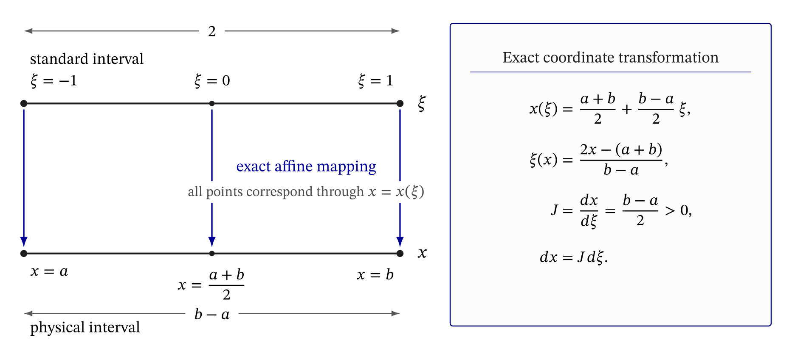

14 Standard and physical coordinates
The Gauss–Legendre rules introduced in Chapter 13 are defined on the standard integration interval
\[ \xi\in[-1,1]. \]
A scalar integral or a physical finite element is usually defined over a different interval. For example, consider a two-node bar element whose local nodes are ordered so that \(x_2>x_1\). The element extends from \(x_1\) to \(x_2\) and has positive length
\[ L_e=x_2-x_1>0. \]
The quadrature rule and the physical element therefore use two different coordinates:
- \(\xi\) describes a position on the standard interval;
- \(x\) describes a position on the physical interval.
This chapter develops the exact change of coordinate that relates them. The mapping is not itself a numerical approximation. Its purpose is to express an integral defined on a physical interval as an equivalent integral on the standard interval.
14.1 Relating two intervals
Consider an integral over the physical interval \([a,b]\),
\[ I = \int_a^b f(x)\,dx, \qquad a<b. \]
We seek a coordinate transformation \(x=x(\xi)\) satisfying
\[ \xi=-1 \quad\Longleftrightarrow\quad x=a \]
and
\[ \xi=1 \quad\Longleftrightarrow\quad x=b. \]
Assume a transformation of the form
\[ x(\xi)=c+d\xi. \]
The endpoint conditions give
\[ a=c-d, \qquad b=c+d. \]
Adding and subtracting these equations yields
\[ c=\frac{a+b}{2}, \qquad d=\frac{b-a}{2}. \]
The required transformation is therefore
\[ \boxed{ x(\xi) = \frac{a+b}{2} + \frac{b-a}{2}\xi. } \]
The first term locates the midpoint of the physical interval. The second term scales the standard interval, whose length is \(2\), to the physical interval, whose length is \(b-a\).
The same transformation can be written as
\[ \boxed{ x(\xi) = \frac{1-\xi}{2}a + \frac{1+\xi}{2}b. } \]
Substitution confirms the endpoint correspondence:
\[ x(-1)=a, \qquad x(1)=b. \]
The inverse transformation obtained by solving the affine mapping for \(\xi\) is
\[ \boxed{ \xi(x) = \frac{2x-(a+b)}{b-a} }, \]
and satisfies
\[ \xi(a)=-1, \qquad \xi(b)=1. \]
Because \(a<b\), the denominator \(b-a\) is positive. The forward and inverse mappings are therefore one-to-one and preserve the orientation of the interval.
This transformation is an affine mapping. The exact correspondence between the standard and physical intervals is summarized in Figure 14.1.

An affine mapping has the form
\[ x=a_0+a_1\xi. \]
It combines a linear scaling with a translation. This is more general than a strictly linear mapping: a linear mapping must send the origin to the origin, whereas an affine mapping may shift it.
For the transformation between two one-dimensional intervals, the translation places the midpoint and the scaling adjusts the length. The mapping cannot bend or curve the interval, and its local scale factor is therefore constant.
More general finite element mappings introduced later may have a scale factor that varies with position. Higher-order geometric interpolation can represent such non-affine mappings, although using higher-order shape functions does not by itself require the mapping to be non-affine.
14.2 The Jacobian
Differentiating the mapping gives
\[ \boxed{ J = \frac{dx}{d\xi} = \frac{b-a}{2}. } \]
The quantity \(J\) is the one-dimensional Jacobian of the transformation. It is the exact local scale factor between the two coordinates: at each point, it gives the ratio between a differential length in the physical coordinate and the corresponding differential length in the standard coordinate. Thus,
\[ \boxed{ dx=J\,d\xi. } \]
For \(a<b\), the Jacobian is positive and the mapping preserves orientation. In the affine mapping considered here, \(J\) is also constant: every part of the standard interval is scaled by the same factor.
14.2.1 A geometric check
The length of the interval \([a,b]\) can be recovered by integrating the constant function \(1\):
\[ \begin{aligned} \int_a^b 1\,dx &= \int_{-1}^{1}J\,d\xi \\ &= 2J \\ &= b-a. \end{aligned} \]
This calculation explains the Jacobian geometrically: the standard interval has length \(2\), and multiplication by \(J=(b-a)/2\) converts that length into the physical length \(b-a\).
14.3 Transforming an integral
Using the change of variable \(x=x(\xi)\) and \(dx=J\,d\xi\) gives
\[ \boxed{ \int_a^b f(x)\,dx = \int_{-1}^{1} f\!\left(x(\xi)\right)J\,d\xi. } \]
This equation is an exact identity. The integrand expressed in the standard coordinate is
\[ h(\xi) = f\!\left(x(\xi)\right)J. \]
Only after the integral has been expressed on \([-1,1]\) is Gauss–Legendre quadrature applied:
\[ \boxed{ \int_a^b f(x)\,dx \approx \sum_{g=1}^{n_g} w_g f(x_g)J, } \]
where
\[ x_g=x(\xi_g) \]
is the physical position corresponding to standard integration point \(\xi_g\).
The Jacobian \(J\) and the quadrature weight \(w_g\) have different origins and roles. The Jacobian is fixed by the exact coordinate transformation, whereas \(w_g\) belongs to the selected Gauss–Legendre rule and appears only when the integral is replaced by a finite sum. Although the product \(w_gJ\) occurs in the quadrature formula for the present affine mapping, \(J\) is not a quadrature weight.
The coordinate transformation introduces no approximation:
\[ \int_a^b f(x)\,dx = \int_{-1}^{1}f\!\left(x(\xi)\right)J\,d\xi. \]
The approximation is introduced only when the transformed integral is replaced by a finite weighted sum:
\[ \int_{-1}^{1}f\!\left(x(\xi)\right)J\,d\xi \approx \sum_{g=1}^{n_g}w_gf(x_g)J. \]
An inaccurate quadrature result is therefore not an error caused by the affine mapping. It results from using a quadrature rule that is insufficient for the transformed integrand.
14.4 Worked example: mapping an integral to the standard interval
Return to the scalar integral used to study the midpoint and trapezoidal rules:
\[ I = \int_0^3(x^2+1)\,dx = 12. \]
The physical interval is \([0,3]\). Its affine mapping is
\[ x(\xi) = \frac{0+3}{2} + \frac{3-0}{2}\xi = \frac{3}{2}(1+\xi), \]
and its Jacobian is
\[ J=\frac{3}{2}. \]
Changing variables from \(x\) to \(\xi\) gives
\[ I = \int_{-1}^{1} \left[ \left(\frac{3}{2}(1+\xi)\right)^2+1 \right] \frac{3}{2}\,d\xi. \]
Define the transformed integrand
\[ h(\xi) = \left[ \left(\frac{3}{2}(1+\xi)\right)^2+1 \right] \frac{3}{2}. \]
Expanding it gives
\[ h(\xi) = \frac{39}{8} + \frac{27}{4}\xi + \frac{27}{8}\xi^2. \]
The transformed integrand is quadratic in \(\xi\).
14.4.1 One-point rule
The one-point rule gives
\[ \begin{aligned} Q_1 &= 2h(0) \\ &= 2\left(\frac{39}{8}\right) \\ &= 9.75. \end{aligned} \]
The result is not exact because a one-point Gauss–Legendre rule has degree of exactness one, whereas \(h(\xi)\) has degree two.
14.4.2 Two-, three-, and four-point rules
The two-point rule has degree of exactness three and therefore integrates the quadratic transformed integrand exactly:
\[ Q_2=12. \]
The three- and four-point rules also give
\[ Q_3=Q_4=12. \]
They are exact but use more function evaluations than required. In general, the original integrand and the coordinate mapping together determine the transformed integrand. If the transformed integrand is a polynomial of degree \(p\), an \(n_g\)-point Gauss–Legendre rule is guaranteed to integrate it exactly when
\[ 2n_g-1\geq p. \]
Here \(p=2\), so the two-point rule is the lowest-order rule satisfying this guarantee, and the preceding one-point calculation confirms that the one-point rule is not exact.
14.5 From a physical interval to a reference element
We now specialize the preceding transformation to a two-node bar element. Let the local nodes be ordered so that
\[ x_1<x_2, \]
and define
\[ L_e=x_2-x_1>0. \]
The physical element extends over
\[ x\in[x_1,x_2], \]
while the standard coordinate belongs to
\[ \xi\in[-1,1]. \]
In this finite element context, the standard interval is called the reference element, and \(\xi\) is called the reference coordinate or natural coordinate.
The affine element mapping is
\[ \boxed{ x(\xi) = \frac{1-\xi}{2}x_1 + \frac{1+\xi}{2}x_2. } \]
Equivalently,
\[ x(\xi) = \frac{x_1+x_2}{2} + \frac{L_e}{2}\xi. \]
The Jacobian is
\[ \boxed{ J = \frac{dx}{d\xi} = \frac{L_e}{2}. } \]
The assumption \(x_1<x_2\) ensures \(J>0\). The mapping is therefore nondegenerate and preserves the left-to-right orientation of the element.
14.6 Shape functions in the reference coordinate
In Chapter 10, the two-node bar shape functions were derived directly in the physical coordinate:
\[ N_1(x) = \frac{x_2-x}{L_e}, \qquad N_2(x) = \frac{x-x_1}{L_e}. \]
Substituting \(x=x(\xi)\) gives
\[ \boxed{ N_1(\xi)=\frac{1-\xi}{2}, \qquad N_2(\xi)=\frac{1+\xi}{2}. } \]
These functions satisfy
\[ N_1(-1)=1, \qquad N_1(1)=0, \]
and
\[ N_2(-1)=0, \qquad N_2(1)=1. \]
The element mapping can therefore also be written as
\[ \boxed{ x(\xi) = N_1(\xi)x_1 + N_2(\xi)x_2. } \]
Within the straight one-dimensional two-node bar model, the element geometry is completely specified by the endpoint coordinates \(x_1\) and \(x_2\). Consequently, this affine interpolation does not introduce a geometric approximation and represents the physical element interval exactly.
The same shape functions interpolate the displacement field:
\[ u^h(\xi) = N_1(\xi)u_1 + N_2(\xi)u_2. \]
In contrast to the exact representation of the element geometry, the displacement field is only an approximation of the unknown physical field.
Expressing the approximation in \(\xi\) does not create a new displacement approximation. It is the previously derived linear interpolation written using a different coordinate.
14.7 Transforming shape-function derivatives
The bar strain is defined using a derivative with respect to the physical coordinate \(x\). The element stiffness matrix,
\[ \mathbf{K}_e = \int_{x_1}^{x_2} \mathbf{B}^{\mathsf T}EA\mathbf{B}\,dx, \]
is likewise written in the physical coordinate. The next chapter evaluates this integral using Gauss–Legendre quadrature on the standard interval. Before that rule can be applied, both the integration measure \(dx\) and the physical derivatives contained in \(\mathbf{B}\) must therefore be expressed exactly in terms of the standard coordinate \(\xi\).
At this point, it is natural to ask why the standard coordinate is needed at all. For the present two-node bar, the shape functions are already available as simple explicit functions of \(x\). Their physical derivatives can be computed directly, and the stiffness integral could also be evaluated directly over the physical interval. This is a special advantage of such a simple element and mapping, however, rather than the general finite element procedure.
In finite element theory and implementation, shape functions are customarily defined directly on a standard element. The functions \(N_i(\xi)\) are then fixed polynomials, independent of the position and size of any particular physical element. The geometry of each element is introduced separately through the mapping \(x(\xi)\). This separation makes it possible to use the same shape functions, differentiation procedure, and selected quadrature rule for every element of the same type, while the mapping accounts for the geometry of the individual physical element.
In Chapter 10, the two-node shape functions were derived in the physical coordinate as \(N_i(x)\). In this chapter, they were rewritten as \(N_i(\xi)\) by substituting the affine mapping. This order makes the connection between the physical and standard descriptions especially transparent. In the general formulation, however, \(N_i(\xi)\) is normally introduced directly, without first constructing an explicit expression for \(N_i(x)\). The physical shape function is then known through the composition of \(N_i(\xi)\) with the inverse of the element mapping.
Once \(N_i(\xi)\) is available as an explicit polynomial, its derivative \(dN_i/d\xi\) follows immediately by direct differentiation. Strain, however, requires the physical derivative \(dN_i/dx\). The exact relationship between these derivatives follows from the chain rule. For the present two-node bar, \(dN_i/dx\) is also known from the earlier physical-coordinate derivation, so it provides a direct check of the transformed result.
Let
\[ \widehat{\phi}(\xi)=\phi\!\left(x(\xi)\right) \]
denote any scalar function expressed in the standard coordinate. The chain rule gives
\[ \frac{d\widehat{\phi}}{d\xi} = \frac{d\phi}{dx} \frac{dx}{d\xi} = J\frac{d\phi}{dx}. \]
Because \(J>0\), this relationship can be inverted. At the operator level,
\[ \boxed{ \frac{d}{dx} = \frac{1}{J}\frac{d}{d\xi}. } \]
Applied to the shape functions, it gives
\[ \boxed{ \frac{dN_i}{dx} = \frac{1}{J} \frac{dN_i}{d\xi}. } \]
For the two-node shape functions,
\[ \frac{dN_1}{d\xi}=-\frac12, \qquad \frac{dN_2}{d\xi}=\frac12. \]
Using \(J=L_e/2\) gives
\[ \frac{dN_1}{dx}=-\frac{1}{L_e}, \qquad \frac{dN_2}{dx}=\frac{1}{L_e}. \]
The strain–displacement matrix is therefore
\[ \begin{aligned} \mathbf{B} &= \frac{d\mathbf{N}}{dx} \\ &= \frac{1}{J} \frac{d\mathbf{N}}{d\xi} \\ &= \begin{bmatrix} -\dfrac{1}{L_e} & \dfrac{1}{L_e} \end{bmatrix}. \end{aligned} \]
This is exactly the same constant matrix obtained previously by differentiating the physical-coordinate shape functions directly.
14.8 What the mapping has accomplished
The affine mapping provides the following relationships:
| Quantity | Relationship |
|---|---|
| physical position | \(x(\xi)=N_1(\xi)x_1+N_2(\xi)x_2\) |
| physical differential | \(dx=J\,d\xi\) |
| Jacobian | \(J=L_e/2\) |
| physical derivative | \(dN_i/dx=J^{-1}dN_i/d\xi\) |
| mapped physical point | \(x_g=x(\xi_g)\) |
No numerical approximation has yet been made in deriving these relationships. They allow element integrals and derivatives to be expressed using one standard coordinate system. The next chapter combines these exact transformations with Gauss–Legendre quadrature to evaluate the stiffness matrix and consistent distributed-load vector of the two-node bar.
14.9 Exercises
- Derive the affine mapping from \([-1,1]\) to \([2,8]\) and its inverse, verify both endpoint correspondences, and calculate the Jacobian.
- Map the standard points \(\xi=-1/\sqrt{3}\) and \(\xi=1/\sqrt{3}\) to the physical interval \([2,8]\).
- Verify by direct integration that \(\int_2^8 1\,dx=\int_{-1}^{1}J\,d\xi\).
- Transform \(\int_2^8x\,dx\) to the standard interval and evaluate the transformed integral analytically.
- For a bar element with \(x_1=7\) and \(x_2=11\), calculate \(x(0)\), \(J\), \(dN_1/dx\), and \(dN_2/dx\).
- Explain why the equality introduced by the coordinate transformation must be distinguished from the approximation introduced by quadrature.
The affine mapping relates the standard interval \(\xi\in[-1,1]\) to a physical interval by a constant scaling and a translation. It is an exact, one-to-one change of coordinate when the physical endpoints are correctly ordered.
The Jacobian
\[ J=\frac{dx}{d\xi} \]
is the exact local scale factor of the mapping. It transforms differential lengths according to \(dx=J\,d\xi\).
Changing coordinates produces the exact identity
\[ \int_a^b f(x)\,dx = \int_{-1}^{1}f\!\left(x(\xi)\right)J\,d\xi. \]
Numerical approximation begins only when the transformed integral is replaced by a finite quadrature sum.
The Jacobian and the quadrature weights have different roles. The mapping determines \(J\), whereas the selected Gauss–Legendre rule determines the integration points \(\xi_g\) and weights \(w_g\). The Jacobian is not a quadrature weight.
For a straight two-node bar,
\[ x(\xi)=N_1(\xi)x_1+N_2(\xi)x_2, \qquad J=\frac{L_e}{2}, \]
represents the element geometry exactly. The interpolated displacement \(u^h(\xi)\) remains an approximation of the unknown physical field.
Physical derivatives are recovered exactly through the chain rule:
\[ \frac{d}{dx} = \frac{1}{J}\frac{d}{d\xi}. \]